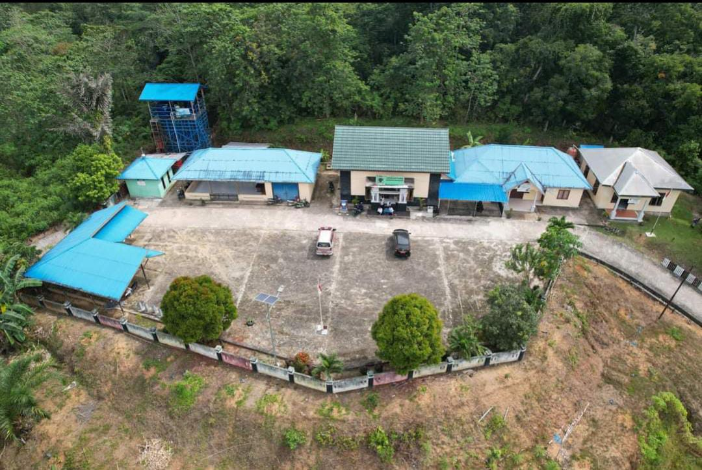

Desa Telemow
Desa Telemow merupakan desa yang terletak di Kecamatan Sepaku, Kabupaten Penajam Paser Utara, Provinsi Kalimantan Timur. Desa Telemow memiliki luas wilayah 481,6 Ha yang terbagi menjadi 3 Dusun dan 14 RT dengan penduduk desa sebanyak 1.721 jiwa pada tahun 2021. Desa Telemow juga memiliki beberapa potensi lokal yang dapat dikembangkan antara lain pada bidang pertanian, perkebunan, perternakan, perikanan, dan pariwisata.
